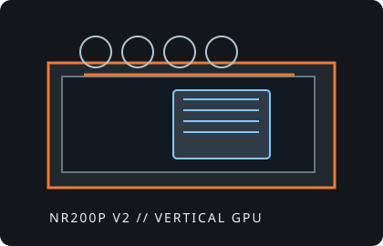

[ IDENTIFIED ENCLOSURE // NR200P V2 ]
Cooler Master MasterBox NR200P V2
372 × 185 × 292 mm (L × W × H, including protrusions), 18.25 L; Mini-ITX case with a vertical GPU riser and top radiator support.

VARIANT / ARCHIVAL CAVEAT: NR200P V2 is a distinct, riser-first revision, not interchangeable with every NR200 or NR200P layout. Confirm included PCIe riser version, panel kit and vertical-card orientation.
Mechanical specifications and fit
| Catalog identity | Cooler Master MasterBox NR200P V2 Mini-ITX chassis. |
|---|---|
| Dimensions / board | 372 × 185 × 292 mm including protrusions; 18.25 L. Mini-ITX boards up to 170 × 180 mm. |
| GPU clearance | Vertical triple-slot card up to about 357 × 160 × 73 mm when extending past the front bracket; cards staying within the bracket have an alternate limit near 334 × 160 × 80 mm. Check connector clearance and included riser. |
| CPU cooler / radiator | CPU air cooler height up to 67 mm in the vertical-GPU configuration. Top radiator support up to 280 mm with the intended bracket/fan arrangement; verify stack thickness and tubing path. |
| PSU / storage | SFX or SFX-L PSU, maximum length about 130 mm. Supports two 2.5-inch drives and one 3.5-inch drive, subject to fan/HDD conflicts. |
| Revision / identification | Different V2 arrangement from the original NR200P; preserve the supplied vertical PCIe 4.0 riser and GPU support bracket. |
Compatibility notes
Use the specific GPU envelope matching whether the card projects beyond the front bracket. Its dimensions must include the cooler shroud and power plug; cable bend room behind the side panel can be more limiting than nominal length. In the vertical GPU layout, the 67 mm CPU-cooler limit rules out many tower coolers. The 280 mm radiator stack is top-mounted and its fan/radiator thickness must be checked against motherboard components.
- Fit-test the riser and support bracket before final cable management.
- Check 3.5-inch drive fit against lower fan thickness and GPU length.
- Do not apply original NR200/NR200P accessory assumptions to the V2 without checking.
Manufacturer specifications and support
- Cooler Master NR200P V2 specificationsOfficial manufacturer product specifications and included riser overview.
- Cooler Master support and downloadsOfficial manufacturer support portal for manuals and product-specific documentation.